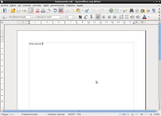

Crear documentos ODF directamente desde python
Publicado el jue 02 julio 2009 en Linux,Ofimatica,Desarrollo • 2 min de lectura
Existe una herramienta y API para python que permite crear documentos y hojas de cálculo directamente desde un programa. El módulo se llama odfpy .
Bajar e instalar odfpy: Se puede bajar desde el repositorio subversion:
svn export https://svn.forge.osor.eu/svn/odfpy/trunk odfpy
Luego se cambia al directorio odfpy:
cd odfpy
Para instalar se ejecuta
python setup.py install
Desde easy_install:
easy_install odfpy
En este caso baja el paquete y lo instala.
Las herramientas que se instalan son:
- mailodf - Envía un archivo ODF como html
- odf2xhtml - Convierte ODF a (X)HTML
- odf2xml - Crea un documento xml desde el archivo ODF
- odf2mht - Convierte ODF a HTML
- odf2war - Convierte ODF a archivo web de KDE
- odfimgimport - Importa imagens del documento
- odflint - Verifica el archivo
- odfmeta - Lista o cambia la información metadata de un archivo ODF
- odfoutline - Muestra el documento fuera de línea
- odfuserfield - Lista o cambia las los campos de declaración del usuario en un archivo ODF
- xml2odf - Crea un archivo ODF a partir de un archivo XML
El ejemplo "Hola Mundo". Se ejecuta el interpretador de comando de python Importar los módulos de Opendocument Importar el módulo de manejo de documentos de texto Se usa el objeto que maneja documentos de texto Se escribe Hola mundo en un elemento Se agrega el elemento al documento Se salva el documento
>>> from odf.opendocument import OpenDocumentText
>>> from odf.text import P
>>> textdoc = OpenDocumentText()
>>> p = P(text="Hola mundo!")
>>> textdoc.text.addElement(p)
>>> textdoc.save("holamundo",True)
En la siguiente imagen se muestra el documento creado.

===
¡Haz tu donativo! Si te gustó el artículo puedes realizar un donativo con Bitcoin (BTC) usando la billetera digital de tu preferencia a la siguiente dirección: 17MtNybhdkA9GV3UNS6BTwPcuhjXoPrSzV
O Escaneando el código QR desde billetera: